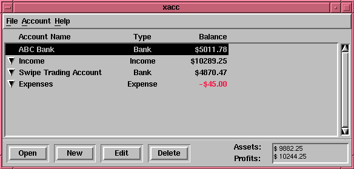
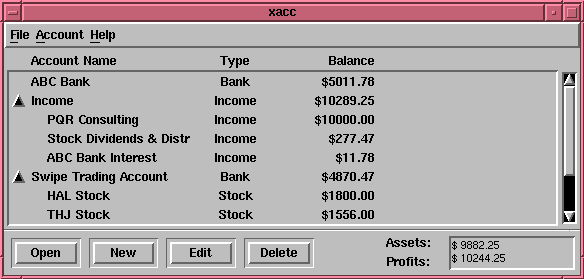

THIS FILE IS ALMOST EMPTY
This is the main account window. Control accounts
from here. Add more documentation.
Below is a picture of the main window, with only the
main accounts shown. Note how "ABC Bank" has been selected
by highlighting. To show the detail accounts,
click on the arrows on the left.

Here is the main window, with the detail accounts showing.

The "Open Subaccounts" menu item is interesting only if
you choose an account with sub-accounts (detail accounts).
Accounts with sub-accounts will always have arrows on thier
left. By choosing the "Open Subaccounts" menu item, a
general ledger window is opened, which displays all transactions
for the lead and the detail accounts. Note that the
general ledger window is more complicated and harder to use than
the individual account registers. The general ledger window
allows a more comprehensive overview of accounts in a smaller
space. Because of its increased complixity, it use is recommended
only for accounting experts.